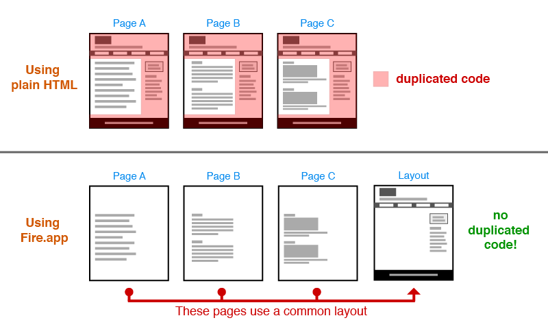

為什麼要使用 Fire.app？
Fire.app 是為了方便網站開發人員製作網站原型而開發的工具，不僅改善了許多在此階段容易造成困擾的問題，寫出的成品亦能沿用至後續的工作流程。
如果你常在工作時遇到以下狀況，就應該考慮試試 Fire.app ：
- 使用所見即所得的工具製作網站原型時耗費許多時間製作及溝通修改才好不容易定案，卻還得重新把定案的版本寫成 html 才能用，感覺很沒效率？
使用 Fire.app 製作出來的成品就是網站實際使用的 HTML 、 CSS 和 JavaScript，無需大幅修改就能銜接後續的網站製作流程。 - 負責做網站切版時，對於每個頁面都要複製一次各頁面共同的部分感到既不方便又浪費時間，需要修改時更是萬分痛苦？
Fire.app 支援許多樣板語言，利用樣板語言搭配 Fire.app 的 layout 與 partial 機能便能有效解決這樣的問題。
 - 製作網站切版時必須自己複製貼上模擬版面用的假文，卻在網站套版後發現資料長度與原來使用的假文不同而爆版，只好反覆修改但覺得非常厭煩？
Fire.app 提供中、英、日三國語言的假文產生 helper ，能依指定的類型或長度產生假文。當重新整理頁面時便會更新文字，設計師便能盡早處理可能因文字長度改變而發生的版面問題。 - 製作頁面切版時要重複貼上多次同樣的 HTML 段落來達成指定長度的清單或選單，長度變更時還要自己數，感覺很蠢？
利用 Fire.app 支援的樣板語言，只要撰寫簡單的幾行程式便能達成相同的需求，還能直接指定長度，方便快速調整與修改。 - CSS 愈寫愈長也愈寫愈亂，覺得很難整理維護？或已經聽說過 Sass 和 Compass 的好處但不知道怎麼安裝才能使用？
Fire.app 支援 Sass 和 Compass ，不用安裝就能使用。利用這兩樣工具能讓撰寫 CSS 變得更快速、直覺，維護起來也更加方便。 - 久聞 CoffeeScript 很棒，但卻不知道要怎麼裝起來用？
Fire.app 支援 CoffeeScript ，不用特別裝，打開就能用。 - 每次修改檔案都要不斷的按重新整理，很煩人。
Fire.app 支援 LiveReload，裝上外掛或插入程式碼就能在每次更新檔案後自動重新整理，再也不用按個不停。
看完上面的情境說明後，是否對 Fire.app 感到心動了呢？ 也許你還會有以下的疑慮：
- 我的電腦系統是 Windows / Mac OS / Linux，可以使用 Fire.app 嗎？
Fire.app 是一個跨平台的工具，只要購買一次就能同時取得 Windows 版、Mac OS 版及 Linux 版。不但自己切換作業系統時能夠無痛轉移，需要和使用其他平台的同事協作專案時也無須煩惱。 - 用 Fire.app 的話還能使用我原來的編輯器嗎？
當然可以。Fire.app 的功能和編輯器完全無關，它只是一個協助處理檔案的工具，所以可以使用任何自己喜歡的編輯器進行工作。 - 用 Fire.app 做出來的成品能讓不會使用 Fire.app 的人接手嗎？
Fire.app 具有 「Build Project」的功能，這個功能能把做好的專案輸出成一般的靜態 HTML / CSS 檔案，完全不需要懂 Fire.app 也能接手處理專案成品。 - 想使用 Fire.app 需要哪些基礎知識？
其實只要懂基本的 HTML 和 CSS，再參考我們提供的教學及範例應該就能了解如何利用 Fire.app 的機能，最重要的是要抱著願意嘗試寫程式的心態，很快就能有所收穫。